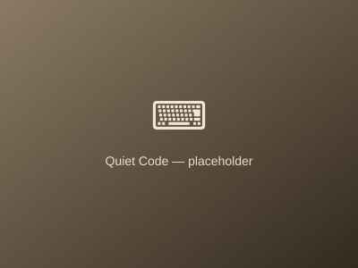

Epistolary Desk · Dispatch No. 4
The Whisper Box / Postbox
Got a thought on an essay, a distributed systems puzzle, or just want to whisper a quiet greeting? Drop an ink postcard onto my desk. Read with my morning cup of tea.
Asynchronous Solitude
I do not check this inbox in real time. Postcards are read once a day between 8:30 and 9:15 AM with a pot of Shan Tuyet tea. The ones that stay with me get pinned to the board.
The Community Board
0 pinnedMorning Artifacts
The Desk Surroundings
The small physical companions that keep the handwriting slow. Click one to read related essays.

Daily Brew
Shan Tuyet Ancient Oolong
Steeped three times in a Yixing clay pot before the morning's dispatches.

Tactile Correspondence
Raw Beeswax & Sealing Stamp
Every physical reply bears this terracotta seal, cooling gently on the envelope.

Quiet Code
Heavy Keycaps & Vim Buffers
Where software and quiet essays get sculpted before reaching this journal.